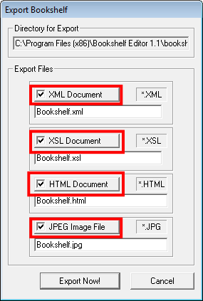

> Exporting the Bookshelf >
Description of the file types
8.1. Description of the file types
Below is the description of the file types that you can export using Bookshelf Editor:

- XML - Stands for Extensible Markup Language. Exporting your bookshelf as an XML Document allows you to modify all of the wording, where text appears, whether text is plain-font, bold or in italics, and so on.
- XSL - Stands for Extensible Stylesheet Language. Exporting your bookshelf as an XSL Document allows you to modify the XML stylesheet. That is, you can alter characteristics such as font, text color, letter-size, indentation size, color scheme, and so on.
- HTML - Stands for HyperText Markup Language. Exporting your book shelf as an HTML file allows you to view your bookshelf and follow the book-links using an Internet browser.
- JPEG - Stands for Joint Photographic Expert Group and it is used as a method for compressing digital images.